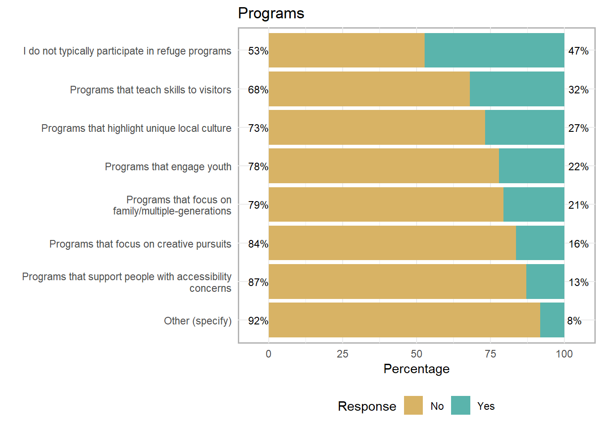
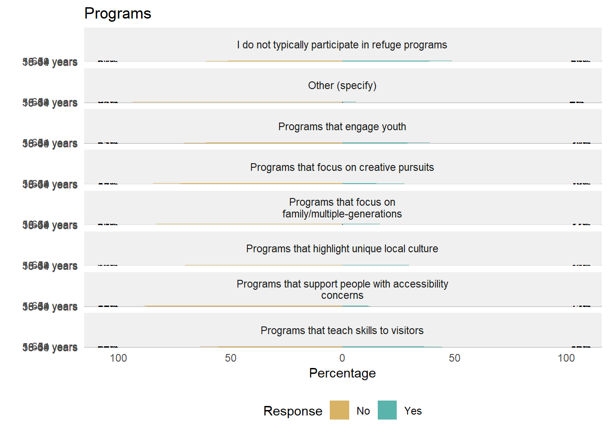

10 Enhancing Future Visits to National Wildlife Refuges
10.1 Forecasting Future Recreation Demand at This Refuge
Gaining a sense of what would encourage visitors to return (or what may prevent them from returning) would be useful information for managers, planners, and visitor services personnel. For example, some visitors may prefer increased infrastructure, while others may want more access to opportunities on the refuge. However, any management action aimed at increasing recreation participation should be considered in relation to possible effects on different visitor groups. For example, visitors may report that more infrastructure would lead to increased participation in a particular primary activity (e.g., birdwatching, fishing), but that particular increased participation could also result in others feeling crowded, subsequently reducing their participation. Thus, results in this section should be considered as part of a network of potential decisions that could affect different visitor groups disproportionally if not carefully considered in full.

10.2 Visitor Programs
Offering programming that is equitable to various groups of visitors at refuges, whether located in urban areas or elsewhere, will help to build a stronger conservation constituency into the future (U.S. Fish and Wildlife Service 2014). Creation and administration of different types of programs can encourage people to continue visiting the refuge, and further build relationships and encourage visitation among new audiences. These opportunities can focus a variety of interests and topics ranging from skill-building, specific youth programs, family-based or multi-generational programs, or showcasing local or unique culture. Programs that focus on the interests of these varied audiences in order to foster stronger connections to the refuge and its resources may ultimately help to enhance conservation goals.
YOUTHPROG FAMILYPROG SKILLPROG LOCALPROG ARTPROG ACCESSPROG OTHERPROG 1 No No No No No No No 2 Yes No Yes No No No No 3 No No No No No No No 4 No Yes No No No No No 5 No No No No No No No 6 Yes No Yes No No Yes No NOPROG 1 Yes 2 No 3 Yes 4 No 5 Yes 6 No [1] 8 ‘data.frame’: 4078 obs. of 8 variables: $ Programs that engage youth : Factor w/ 2 levels “No”,“Yes”: 1 2 1 1 1 2 1 2 1 1 … $ Programs that focus on family/multiple-generations : Factor w/ 2 levels “No”,“Yes”: 1 1 1 2 1 1 1 2 1 1 … $ Programs that teach skills to visitors : Factor w/ 2 levels “No”,“Yes”: 1 2 1 1 1 2 1 1 1 1 … $ Programs that highlight unique local culture : Factor w/ 2 levels “No”,“Yes”: 1 1 1 1 1 1 1 2 2 1 … $ Programs that focus on creative pursuits : Factor w/ 2 levels “No”,“Yes”: 1 1 1 1 1 1 1 2 1 1 … $ Programs that support people with accessibility concerns: Factor w/ 2 levels “No”,“Yes”: 1 1 1 1 1 2 1 1 1 1 … $ Other (specify) : Factor w/ 2 levels “No”,“Yes”: 1 1 1 1 1 1 1 1 1 1 … $ I do not typically participate in refuge programs : Factor w/ 2 levels “No”,“Yes”: 2 1 2 1 2 1 2 1 1 2 … Programs that engage youth 1 No 2 Yes 3 No 4 No 5 No 6 Yes Programs that focus on family/multiple-generations 1 No 2 No 3 No 4 Yes 5 No 6 No Programs that teach skills to visitors 1 No 2 Yes 3 No 4 No 5 No 6 Yes Programs that highlight unique local culture 1 No 2 No 3 No 4 No 5 No 6 No Programs that focus on creative pursuits 1 No 2 No 3 No 4 No 5 No 6 No Programs that support people with accessibility concerns Other (specify) 1 No No 2 No No 3 No No 4 No No 5 No No 6 Yes No I do not typically participate in refuge programs 1 Yes 2 No 3 Yes 4 No 5 Yes 6 No [1] 8 Item No 1 Programs that engage youth 77.90584 2 Programs that focus on family/multiple-generations 79.45071 3 Programs that teach skills to visitors 68.09711 4 Programs that highlight unique local culture 73.24669 5 Programs that focus on creative pursuits 83.69299 6 Programs that support people with accessibility concerns 87.10152 7 Other (specify) 91.85875 8 I do not typically participate in refuge programs 52.79549 Yes 1 22.094164 2 20.549289 3 31.902894 4 26.753310 5 16.307013 6 12.898480 7 8.141246 8 47.204512 
‘data.frame’: 32 obs. of 4 variables: $ Group: Factor w/ 4 levels “18-34 years”,..: 1 1 1 1 1 1 1 1 2 2 … $ Item : Factor w/ 8 levels “Programs that engage youth”,..: 1 2 3 4 5 6 7 8 1 2 … $ No : num 70.9 76.7 55.6 63.3 72.3 … $ Yes : num 29.1 23.3 44.4 36.7 27.7 … ‘data.frame’: 8 obs. of 6 variables: $ Item : Factor w/ 8 levels “I do not typically participate in refuge programs”,..: 1 8 6 3 5 4 7 2 $ low : num 52.8 68.1 73.2 77.9 79.5 … $ neutral: num 0 0 0 0 0 0 0 0 $ high : num 47.2 31.9 26.8 22.1 20.5 … $ mean : num 1.47 1.32 1.27 1.22 1.21 … $ sd : num 0.499 0.466 0.443 0.415 0.404 … Item high 8 I do not typically participate in refuge programs 47 3 Programs that teach skills to visitors 32 4 Programs that highlight unique local culture 27 1 Programs that engage youth 22 2 Programs that focus on family/multiple-generations 21 5 Programs that focus on creative pursuits 16 6 Programs that support people with accessibility concerns 13 7 Other (specify) 8
References
U.S. Fish and Wildlife Service. 2011. Conserving the Future: Wildlife Refuges and the Next Generation. Book. Washington, DC: U.S. Department of the Interior, U.S. Fish; Wildlife Service, National Wildlife Refuge System. https://www.fws.gov/refuges/pdfs/FinalDocumentConservingTheFuture.pdf.
2014. Standards of Excellence. Book. https://www.fws.gov/urban/soe.php.